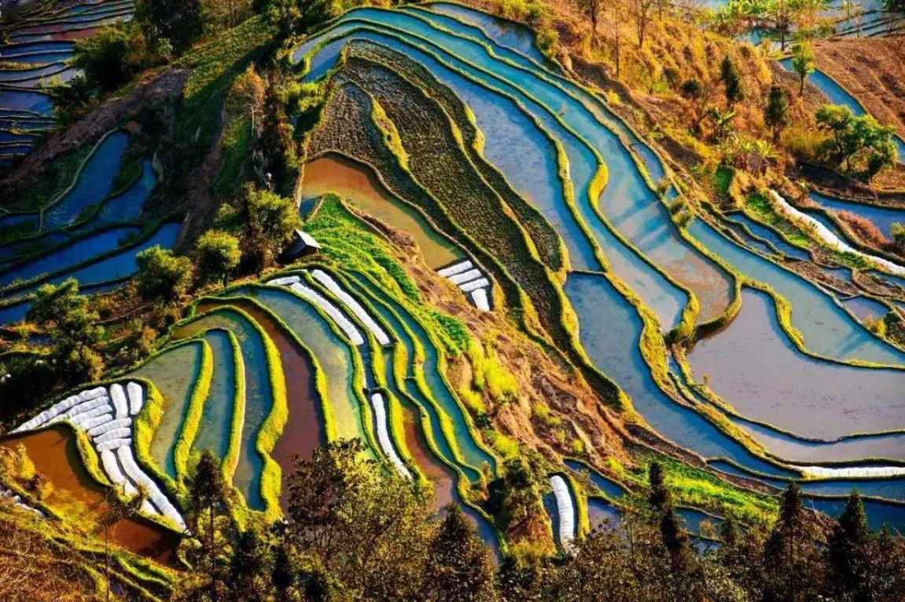
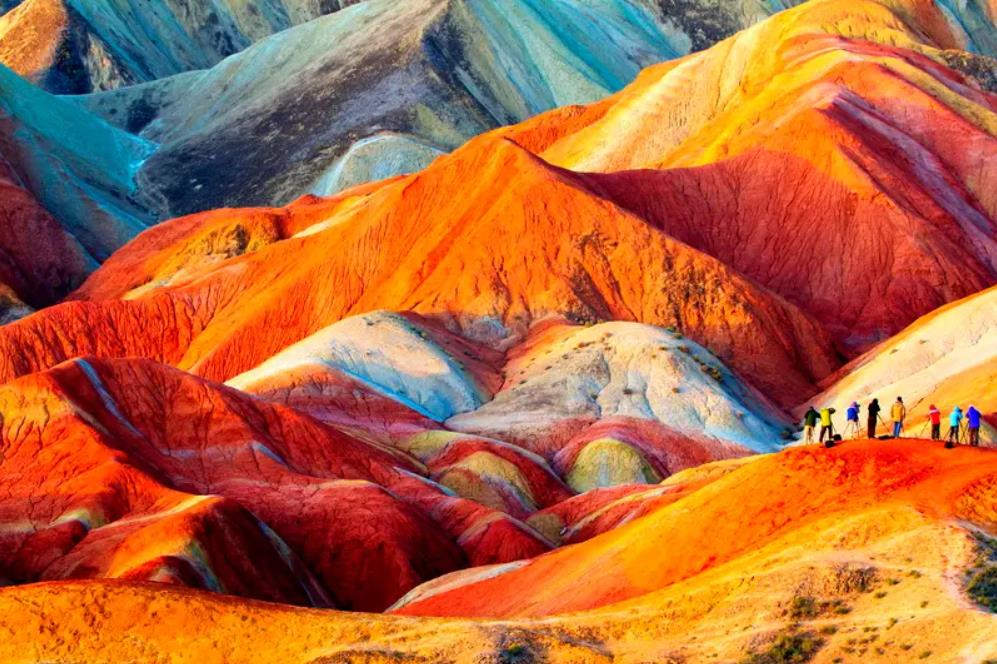
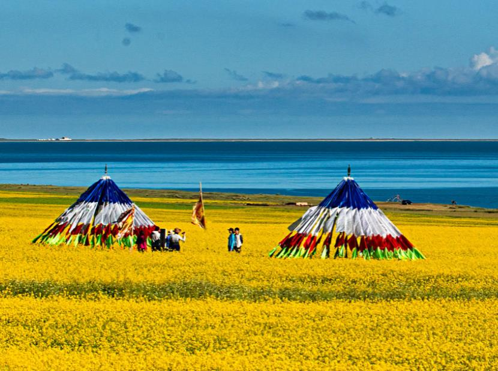
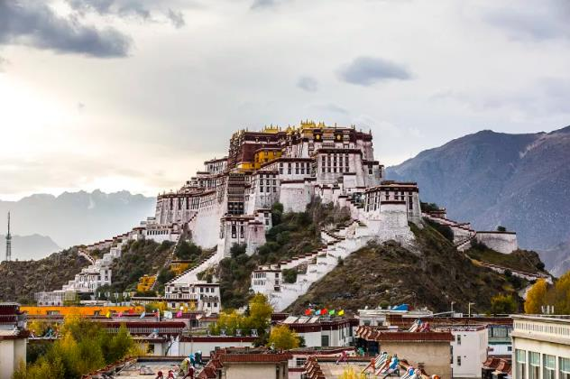
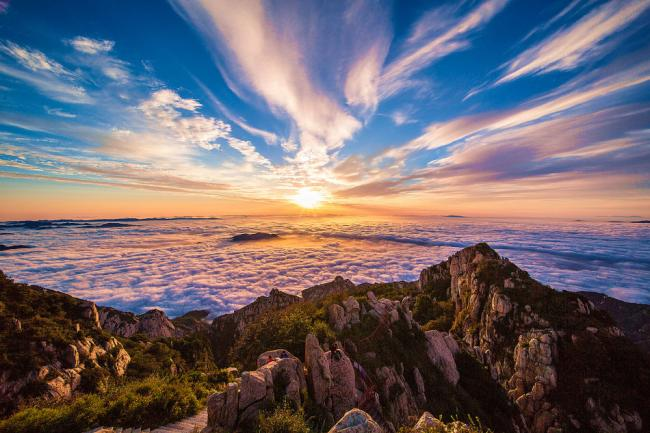
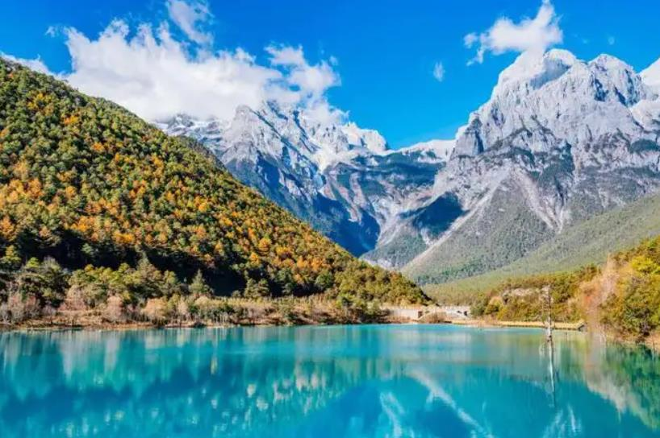
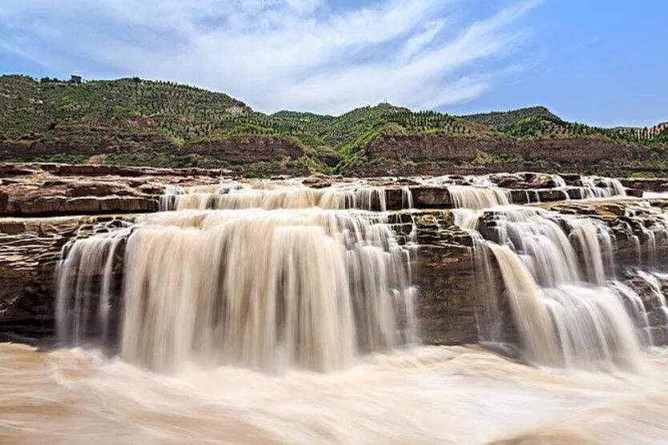

江山如此多娇
THE COUNTRY IS SO RICH IN BEAUTY

元阳梯田
"你一眼，就是哈尼的1300年。"元阳梯田是1300年哈尼族留下的一幅名画。由于这里的山势和地形只能开辟梯田种植，于是当地居民因地制宜，把缓坡开辟成大面积的农田，把...

七彩丹霞
丹霞更像一部彩绘的地质教科书，章章有序，节节新颖。绘图分布匀称，图画明朗细腻。布局在阴面石壁上的细纹、暗花，仿佛记载着曾在祁连山下血腥风雨的争战，繁华落寞的往昔...

青海湖
人间仙境—青海湖，是天堂掉下来的一滴甘露 ，是银河溅出来的一颗珍珠 当我仰望着塔尔寺的神圣 仿佛你又像洁白的哈达 在我肩头飘拂 ...
壮美山河
MAGNIFICENT RIVERS AND MOUNTAINS
万里长城 -- 蕴含着我们古代人民的劳动智慧和辛勤的付出

布达拉宫 -- 令无数人感到神秘，又无比向往的地方

泰山之巅 -- 云海绵绵，烂锦飞千丈，金波涌万棱

黄河壶口瀑布 -- 黄河之水天上来，奔流到海不复回

玉龙雪山 -- 玉龙昂首天咫尺，远视滇池照影白